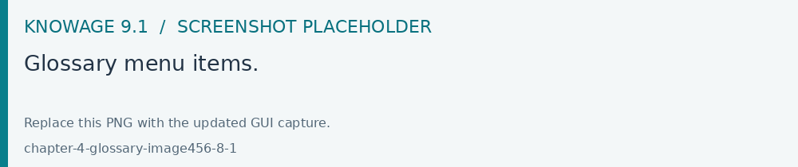
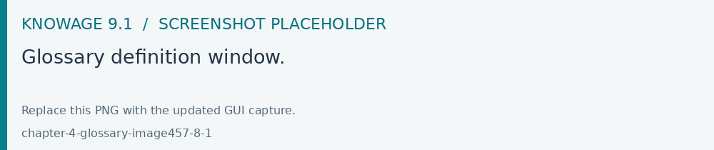
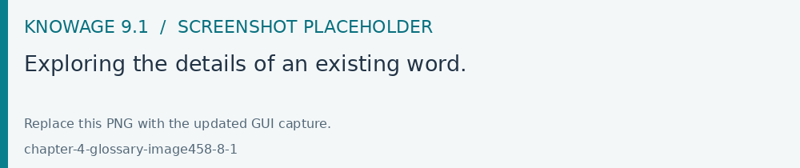
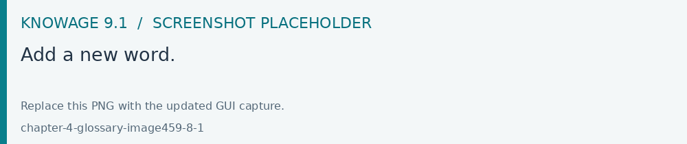
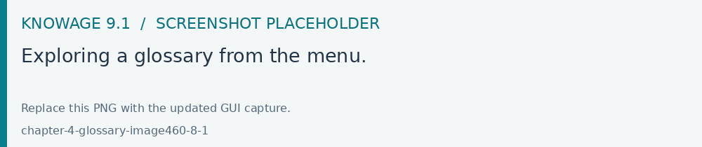
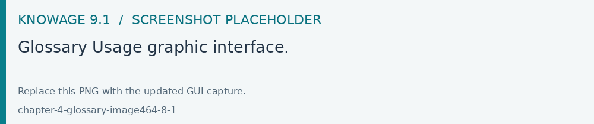
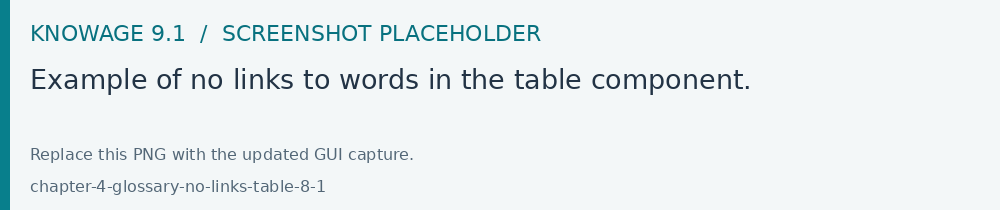
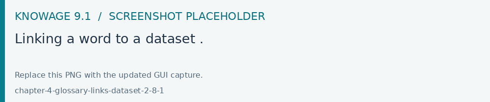
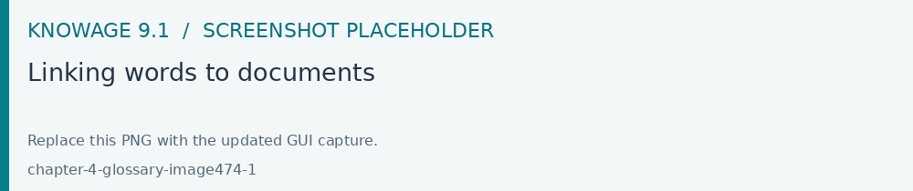
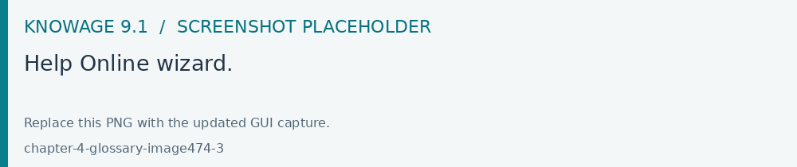

Glossary
Use the glossary module provided by your edition to organize business terms and associate them with analytical content. Test term visibility and links as a reader after saving changes to a shared glossary.
The Glossary functionality offers a way to find documents by browsing an index page.
Glossary management
Once logged in, the user can find the two menu items, Glossary Definition and Glossary Usage in CATALOGS of the Knowage main menu, as shown below.

Fig. 678 Glossary menu items.
To create a new glossary, just click on the Glossary Definition menu item. As shown in the figure below, the page contains two areas:
Words List: contains the list of all the defined words to be used as labels to attach to analytical objects, as datasets or documents;
Glossary: intended as a hierarchical structure made up of Words.

Fig. 679 Glossary definition window.
As shown above, next to each word, there are two icons:
i: prompts the details of the selected word: name of the Word, Status, Category, Description, Formula, Links to other words and Attributes
delete: deletes the selected word
The Word list contains all the words previously created whose details can be visualized just clicking on them. The following panel will be visible.

Fig. 680 Exploring the details of an existing word.
To add a new word, click the Plus icon available next to the Word List text item an fill in at leats the mandatory information,*Word*, Category and Description. Use the Save button for saving. Once saved, you can search it or a different word just by using the search filter.

Fig. 681 Add a new word.
The Glossary panel contains all the glossaries formerly created. To explore an existing glossary just open the menu of the Glossary Definition item and select one of the options. The figure below shows an example. A hierarchical structure of the glossary appears, where each node has its own words .

Fig. 682 Exploring a glossary from the menu.
To add a new glossary click the Plus icon next to the Glossary Definition text item.
Fig. 683 New glossary wizard.
After assigning a name to the Glossary Definition field, the Glossary is automatically saved.
Click on ADD NODE, fill in the node name and save. The image below shows the ADD Node functionality and also how to add words to a node once created.
Glossary Usage
This functionality works accordingly to the user role and includes features that allow to create/visualize the associations of the words of a glossary to:
documents,
datasets,
business classes and
tables (columns).
The details of all the defined glossaries can be displayed just selecting Glossary Usage from CATALOGS of the Knowage main menu.

Fig. 684 Glossary Usage graphic interface.
Select a glossary from the combobox available and search for a word inside the glossary. The page refreshes showing the links of that word with the components metioned above.
In case of no links with i.e. a Table, a message prompts informing that there are no links to the word.

Fig. 685 Example of no links to words in the table component.
To associate the glossary to a specific component, just click the LINK functionality next to each element. See figure below as example.
Fig. 686 Linking a word to a dataset .
After clickin on LINK, a wizard opens. Here you can select the glossary and to associate the word it is enough to drag and drop it in the editor area of the chosen dataset. After closing the wizard, clicking on the i icon you can see the list of words associated. See image below:

Fig. 687 Linking a word to a dataset .
Help Online functionality
After linking a document to a glossary the user can use the Help Online functionality when running that document.
The image below shows the linking between the words of a glossary and a specific document as a former step after creating a new glossary.

Fig. 688 Linking words to documents
When the user runs the document the graphical interface allows from the three dots menu to see the Help Online.
Fig. 689 Help Online wizard.
As a result of the former linking the Help Online will display the following.

Fig. 690 Help Online wizard.
All those words belonging to the glossary will be displayed.